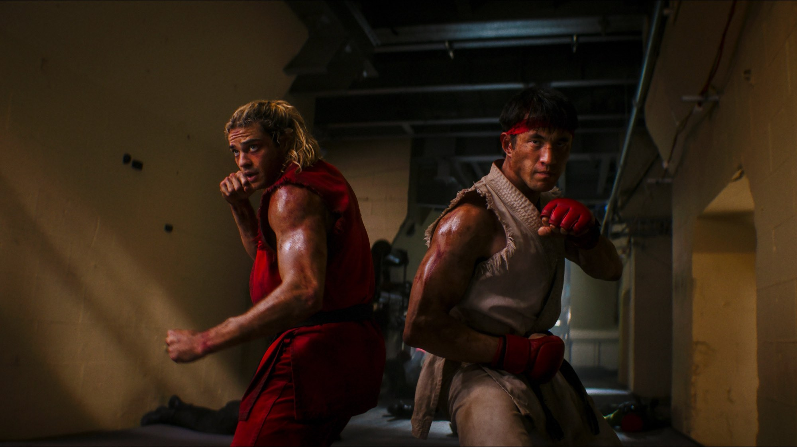
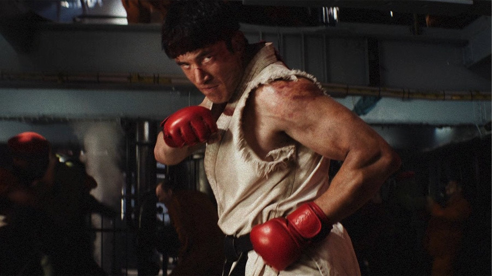

Street Fighter: quando esce, trama, cast e cosa sappiamo
Dal 15 ottobre in sala il nuovo film tratto dal videogioco Capcom: Ryu e Ken tornano al torneo, tra Noah Centineo, Jason Momoa e 50 Cent
Il 15 ottobre 2026 Street Fighter torna al cinema. Lo distribuisce Eagle Pictures, come riportano la scheda e la notizia sul trailer italiano di ComingSoon, e la regia è di Kitao Sakurai. È la terza volta che il videogioco Capcom arriva in sala dal vivo, dopo il film del 1994 e lo spin-off del 2009: due precedenti che il pubblico ricorda soprattutto per le critiche, e che questo film vuole lasciarsi alle spalle.
La trama: un torneo, due ex amici e una cospirazione
La storia è ambientata nel 1993, in piena epoca dei videogiochi da sala. Ryu e Ken Masters erano inseparabili, poi le loro strade si sono separate. A riportarli insieme è Chun-Li, che li recluta per il World Warrior Tournament, il torneo organizzato dal misterioso M. Bison. Secondo la sinossi di ComingSoon, sotto lo spettacolo dei combattimenti c'è una «cospirazione letale»: Ryu e Ken dovranno affrontarsi tra loro e guardare in faccia i propri fantasmi, e la posta in gioco è il futuro dell'umanità.
Non ci sono ancora recensioni e quindi qui non troverai giudizi: ti raccontiamo solo ciò che le fonti permettono di dire. La scelta di fissare la vicenda nel 1993 è già un'indicazione chiara: il film guarda all'epoca d'oro dei picchiaduro, non alle versioni più recenti del gioco.

Il cast: da Ryu a Blanka
Ryu ha il volto di Andrew Koji e Ken Masters quello di Noah Centineo. Callina Liang è Chun-Li e David Dastmalchian è il cattivo, M. Bison. Joe Anoa'i, che Wikipedia indica anche come Roman Reigns, interpreta Akuma. Il resto del cast è una vera parata di nomi noti: Jason Momoa è Blanka e 50 Cent, cioè Curtis Jackson, è Balrog. Sempre secondo Wikipedia, tra i cameo compaiono anche due volti del mondo dei giochi di combattimento, Maximilian Dood e Justin Wong.
Il film è prodotto da Capcom e Legendary. Per chi vuole mettere in ordine gli altri titoli in uscita nello stesso periodo, abbiamo la pagina «Le uscite di ottobre 2026».
Dalla sala giochi al set: come è nato il film
Il percorso è stato lungo. Secondo Wikipedia, Legendary ha acquisito i diritti nell'aprile 2023. Nel giugno 2024 i fratelli Danny e Michael Philippou, autori di Talk to Me, hanno lasciato il progetto, e a febbraio 2025 è stato scelto Kitao Sakurai, che firma anche la sceneggiatura con T.J. Fixman. Le riprese si sono svolte in Australia, da agosto a novembre 2025, come confermano sia Wikipedia sia ComingSoon.
Perché si aspetta questo film
Il primo motivo è il peso del marchio. La serie è nata nel 1987 alla Capcom, ideata da Takashi Nishiyama e Hiroshi Matsumoto, e con Street Fighter II del 1991 ha fissato le regole dei picchiaduro a due giocatori. Secondo Wikipedia, a luglio 2026 le vendite complessive superavano i 60 milioni di copie nel mondo, e Street Fighter 6, uscito a giugno 2023, ha tenuto vivo l'interesse di un pubblico nuovo.
Il secondo è il confronto con il passato. Il film del 1994, diretto da Steven E. de Souza, con Jean-Claude Van Damme nei panni di Guile e Raul Julia in quelli di M. Bison, incassò circa 99,4 milioni di dollari nel mondo a fronte di un budget di 35 milioni, un buon risultato commerciale. Le recensioni però furono pessime: secondo Wikipedia, a ottobre 2026 su Rotten Tomatoes è positivo solo il 18% dei giudizi e su Metacritic il punteggio è 34 su 100. Si salvò l'interpretazione di Raul Julia, candidato postumo al Saturn Award. Lo spin-off del 2009, The Legend of Chun-Li, fu accolto anche peggio.
Il terzo è il cast. Mettere insieme i due protagonisti Koji e Centineo e nomi così diversi tra loro come Momoa e 50 Cent dice che la produzione punta a uno spettacolo per tutti, non solo per i fan di lunga data.
A chi potrebbe piacere
A chi è cresciuto con il gioco e vuole rivedere Hadouken e Shoryuken sul grande schermo, e a chi cerca un film d'azione basato sui combattimenti. Potrebbe incuriosire anche chi conosce il marchio solo di nome, perché la trama riparte dall'inizio. Se invece speri in una storia molto ancorata al realismo, le premesse (un torneo con mosse da videogioco e una cospirazione globale) dicono altro.
Quando il film sarà uscito scriveremo la recensione e ti diremo se questa volta il torneo è stato vinto. Fino ad allora vale la pena guardare il trailer italiano e segnare la data: il 15 ottobre, in sala.
Domande frequenti
Quando esce Street Fighter in Italia?
Il 15 ottobre 2026 nei cinema, distribuito da Eagle Pictures, come indicano le schede di ComingSoon. Negli Stati Uniti l'uscita è prevista il giorno dopo, il 16 ottobre, con Paramount Pictures, secondo Wikipedia.
Dove si vedrà Street Fighter?
Prima di tutto in sala. Per streaming o noleggio in Italia non c'è ancora una data comunicata: la aggiungeremo quando arriverà.
Chi c'è nel cast di Street Fighter?
Andrew Koji è Ryu, Noah Centineo è Ken Masters, Callina Liang è Chun-Li e David Dastmalchian è M. Bison. Con loro Jason Momoa (Blanka), 50 Cent (Balrog) e Joe Anoa'i (Akuma).
Serve conoscere il videogioco per capire il film?
Non dovrebbe servire: la storia riparte da zero con il torneo e i due protagonisti. Conoscere i personaggi aiuta a riconoscere le citazioni, ma non è un requisito.